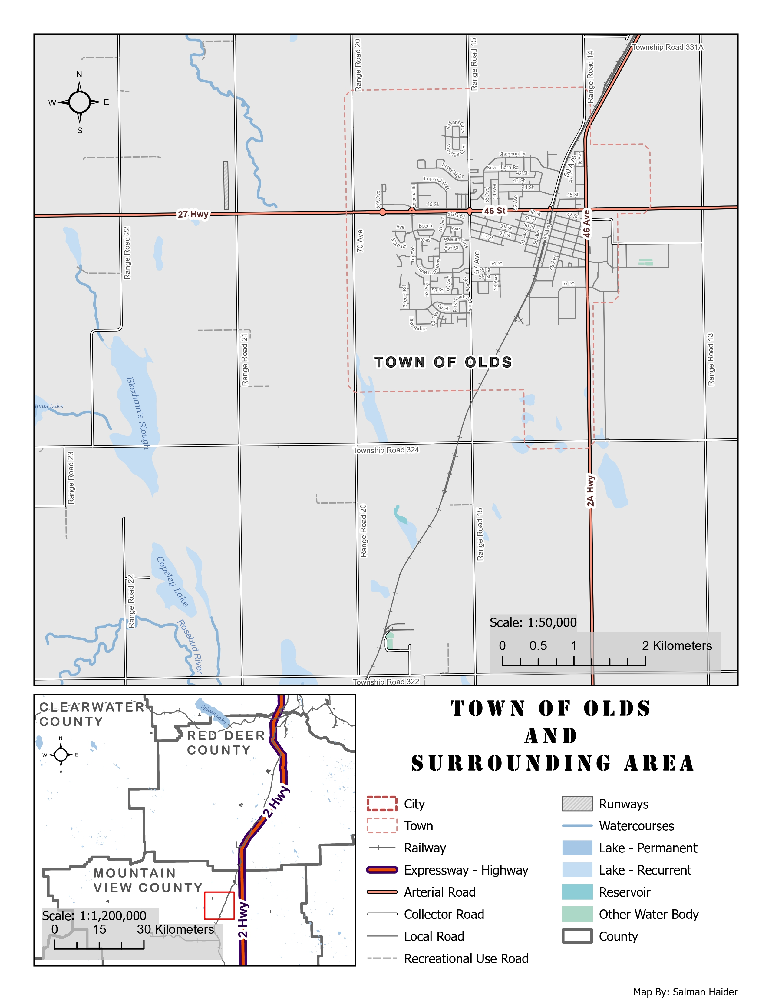

What this map was made for
The purpose of this map was to show the Town of Olds and the features around it, including major roads, local roads, water features, the railway, and surrounding administrative boundaries. I designed it as a general reference map for local residents or anyone who needs a clear view of the town and nearby region.
A reference map like this needs to be easy to read without requiring much explanation. The viewer should be able to quickly identify the main transportation routes, locate the town, understand the surrounding county context, and distinguish between different types of features.
How the layout is organized
The layout includes a large primary map at local scale and a smaller inset map for regional context. The primary map focuses on the Town of Olds and the surrounding roads, railways, lakes, watercourses, and boundaries. The inset map shows the broader county setting and helps viewers understand where the town is located within the surrounding Alberta region.
I included two scale bars because the main map and inset map operate at very different scales. The main map uses a larger scale for local detail, while the inset map uses a smaller scale to show the wider regional setting. This makes the layout more useful for both local orientation and broader geographic context.
How I controlled what the viewer sees first
I used visual hierarchy to make the most important features stand out first. Highways, the Town of Olds label, and major boundaries were made darker, thicker, or more prominent. Less important features, such as local roads and minor roads, were made thinner and lighter so they would not overpower the map.
This hierarchy supports the purpose of the map because the viewer can first understand the major transport structure, then move into smaller details like local streets, water bodies, and secondary roads. I also used label halos to keep the text readable over the light gray background and linework.
How I symbolized the map features
Choosing symbols was one of the more challenging parts of this map because the same layout needed to show many feature types without becoming crowded. I used bold red and purple line styling for expressways and highways because they needed to be the strongest transportation features. Arterial roads, collector roads, local roads, and recreational-use roads were styled with thinner and lighter symbols.
Water features were shown in blue tones because this is a familiar and intuitive color choice for rivers, lakes, reservoirs, and other water bodies. Town and city boundaries were shown as dashed red outlines so they remained visible but did not dominate the map. I also used offset styling in places where boundaries and roads overlapped, so both features could remain readable.
How I handled labels and clutter
Labeling was important because this is a reference map. Roads, water features, counties, and the town label all needed to be readable, but too many labels could quickly make the map look crowded. I adjusted label classes and styling so the most important labels stood out more clearly while smaller features remained secondary.
Road labeling was the most difficult part. Local roads created a lot of potential label clutter, especially around the town center where the street network is dense. I had to balance showing enough labels for orientation while keeping the final layout clean.
What the map communicates
The map shows that the Town of Olds is strongly connected by major transportation routes, especially Highway 2A and Highway 27. The railway also passes through the town area, adding another important linear feature. The surrounding landscape includes lakes, sloughs, watercourses, range roads, township roads, and county boundaries that help define the broader rural setting.
The inset map helps show that Olds sits within a wider county and highway network. This gives the main map stronger geographic context and makes the layout more useful for viewers who are not already familiar with central Alberta.
What I learned from this map
This map helped me understand how much design work goes into a clear reference map. It is not enough to simply turn layers on and add a legend. Each feature type needs to be symbolized in a way that shows category and importance. Roads were especially challenging because collector roads and local roads can start to look similar if the color and thickness are too close.
I also learned that color choices need enough contrast to avoid confusion. For example, some water categories, such as reservoirs and lake classes, can look too similar if the blue tones are close together. In a future version, I would increase contrast between some of these water symbols and further simplify the local road labels around the dense town center.